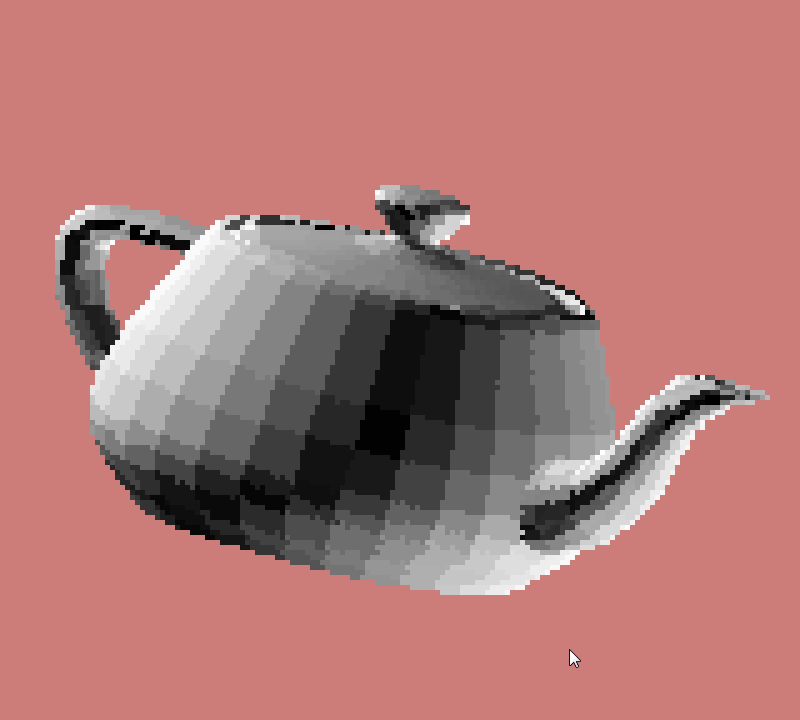
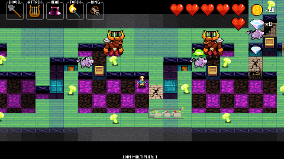
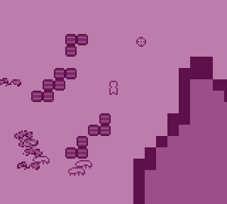
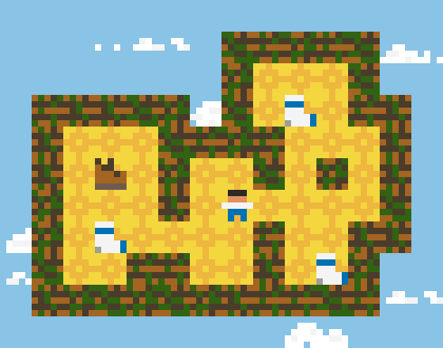
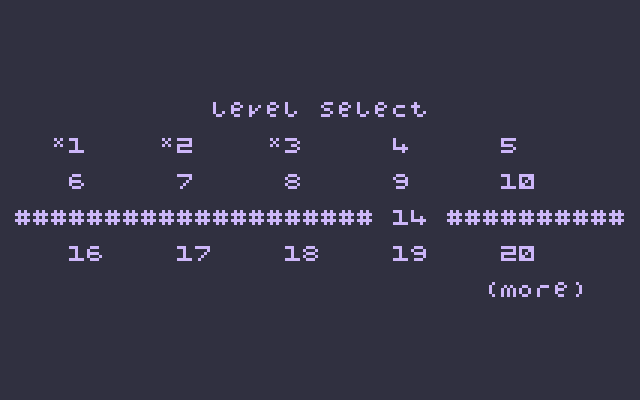
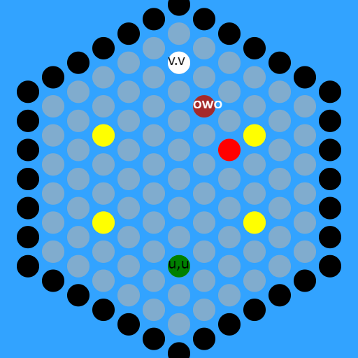
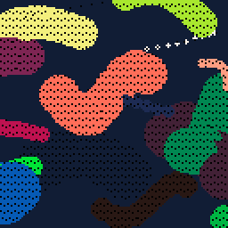

Hi!
I'm pancelor, a lifelong hobbyist game programmer / game designer.
I have 5 years of professional experience in backend web development, but now I'm looking to change careers and make games professionally.
My main interests include writing tools to help designers iterate their ideas more quickly, architecting code, and designing puzzle games.
I think I'd be happiest working on a small indie team doing mostly programming, but some design work too.
Major Projects
Out of all the projects showcased on this page, these are my favorite. I hope you like them too!
TursokoDuckenban
A puzzle game about pushing boxes into other boxes.
Tetris Clone
An exercise to see how hard it is to actually finish a game. (spoiler: it's hard)
(detailed blog post inside!)
Escalator World
An exercise in polishing all the non-core aspects of a game.
Crypt of the NecroDecorator
A game about decorating an inn to remind the visiting monsters of home.
Other projects

Software Renderer
A hand-written 3D renderer! It doesn't use the GPU at all; instead it does fast (integer-only) math to rasterize triangles to the screen, one pixel at a time.

Minotaur Lore
A custom puzzle dungeon for Crypt of the NecroDancer, designed to teach players one very specific aspect of minotaur AI.

Purple Gun Game
An exercise in getting a game running on the Windows API (no SDL2 or other libraries) and adding some cool features (like code hot-reloading!)

Guided Sock Meditation
A puzzle game about matching socks.

Upgo
A little Spelunky-inspired game. This was mainly an exercise in making a platformer with good game-feel (coyote frames, etc)

PuzzleScript Level Select
I added a level select screen to the PuzzleScript engine.

Hexringer
A recreation (with a twist!) of a boss from Crypt of the NecroDancer.

Worms Tweetcart
A fun little animation, written as a pico-8 cartridge that fits inside a tweet.
Software Renderer
A hand-written 3D renderer! It doesn't use the GPU at all; instead it does fast (integer-only) math to rasterize triangles to the screen, one pixel at a time.
Minotaur Lore
A custom puzzle dungeon for Crypt of the NecroDancer, designed to teach players one very specific aspect of minotaur AI.
Purple Gun Game
An exercise in getting a game running on the Windows API (no SDL2 or other libraries) and adding some cool features (like code hot-reloading!)
Guided Sock Meditation
A puzzle game about matching socks.
Upgo
A little Spelunky-inspired game. This was mainly an exercise in making a platformer with good game-feel (coyote frames, etc)
PuzzleScript Level Select
I added a level select screen to the PuzzleScript engine.
Hexringer
A recreation (with a twist!) of a boss from Crypt of the NecroDancer.
Worms Tweetcart
A fun little animation, written as a pico-8 cartridge that fits inside a tweet.